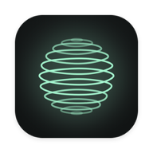
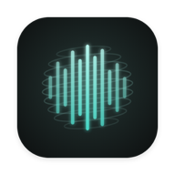

Private AI, on your own hardware
A studio for AI that lives on your phone, iPad and Mac.
Het runs chat, image and voice models on the device itself, or on a Mac you already own. There is no account, and nothing leaves the device unless you turn on web search. Three projects make it up.

The app
Het
Talk to a model, make pages and pictures, record meetings, and run it all on this device, offline. Chats, projects and files stay on the device.
What it does
Chat
Answers stream in with Markdown and highlighted code. The model's reasoning folds away above the answer, and one line sums up what a reply did. Each chat keeps its own model and instructions.
Projects
A piece of work with its chats, the files they share, and instructions every chat starts with. A chat that starts building a page, deck or app becomes a project by itself.
Pages, decks and apps
Het asks what you want, offers wireframes, sets typefaces in your own headline, then builds and checks the layout. Svelte 5 apps compile on the device, with no Node and no build step, and show live beside the chat on iPad and Mac.
Images
Text to image on the device. Before it starts, Het shows the prompt and how long it should take. Qwen-Image can cut the subject out as a transparent PNG.
Voice mode
Talk inside the current chat. Het hears when you have finished by how you speak, not only by a pause, in ten languages, and answers in Kokoro, Supertonic or the system's voices. What you say stays on the device.
Make speech
Text to WAV with on-device speech models. Clone a voice from 5 to 15 seconds of audio, kept only once you confirm consent, or describe the voice you want.
Meetings
A recording, a video or a live meeting becomes a transcript of who said what. On the Mac it can record a call's sound along with the microphone. Voices you know are kept as a fingerprint, not a recording.
Your devices
One switch serves this device's models to your other devices. Pair with a six-digit code, find hosts nearby, and a Mac's models appear in your phone's model picker.
Models
Models grouped by where they run: this device, built in, your devices, servers. Suggestions sized to the device, Hugging Face search, and downloads that carry on in the background.
Library and search
Images, speech, meetings, files and skills in one place. Search finds chats, projects, files and images.
Four themes
Nocturne, green-black and mint. Folio, ink on paper. Clay, lilac and coral. Signal, loud and in capitals. Automatic picks Nocturne at night and Folio by day.
Siri and Shortcuts
“Ask Het” answers a question with a local model, from Siri or a shortcut, on iOS 26 and macOS 26.
Tools the model can call Turned on per chat: Web search, Make files, Images, Think first
WebOff until you turn on web search
- web_search
- Searches the web and returns titles, links and snippets.
- fetch_url
- Reads a public page as text.
FilesIn the project's own folder
- write_file
- Writes notes, scripts, data or a page.
- append_file
- Adds to the end of a file.
- edit_file
- Changes part of a file in place.
- read_file
- Reads a file back.
- list_files
- Lists what the project holds.
- delete_file
- Removes a file.
Images
- generate_image
- Makes an image from a description, after asking you first.
- look_at_image
- Looks at an image made earlier in the chat.
- list_images
- Browses your image library.
- add_image
- Copies a picture from the library into the project.
DesignUnlocked by the design guide
- design_guide
- The steps for a site, landing page, deck, poster, one-pager or web app.
- choose_wireframe
- Lets you pick from two to four grey layouts.
- choose_typography
- Lets you pick from 16 typeface pairings, each set in your own headline.
- make_chart
- Draws a column, bar, line or donut chart as SVG, checked for contrast.
- add_icon
- Adds any of about 1,500 Phosphor icons, in the page's colours.
- check_layout
- Lays the page out at 1280 and 390 pixels wide and reports overflow, clipping, contrast, tiny text, broken images and script errors.
Asking and skills
- ask_user
- Stops to ask you, with real options, their pros and cons, a recommendation, and “You decide”.
- save_skill
- Saves a new skill, such as a house style. It never changes one you already have.
/wireframe Wireframe first
/typography Typefaces
/svelte Svelte app
Landing page
Pitch deck
House style
Ask first
Engines and models
- MLXOn-device chat and images on Apple silicon.
- llama.cppAny GGUF model, in the app's own process, with vision projectors. The engine on Android.
- Apple IntelligenceApple's Foundation Models, on iOS 26 and macOS 26.
- Servers you runAny OpenAI-compatible server: oMLX, llama-server, vLLM, Ollama, LM Studio, or another device running Het.
- sherpa-onnxSpeech recognition and voices, on the device.
- ChatStarts with Qwen3.5 4B or 9B, sized to the device's memory. Also runs Gemma 4 and 3, Mistral, Phi-3, DeepSeek R1, gpt-oss, Granite 4, LFM2 and more. Anything in MLX or GGUF on Hugging Face can be searched for.
- HearingSilero VAD and Smart Turn for turn-taking. Moonshine, NVIDIA Canary and Cohere Transcribe for speech recognition. pyannote and 3D-Speaker to tell speakers apart in meetings.
- SpeakingKokoro, Supertonic and the system's voices in voice mode. OmniVoice, Qwen3-TTS, Fish Audio S2 Pro and Meta's MMS voices in Make speech.
| Image model | Download | Steps | Licence |
|---|---|---|---|
| FLUX.2 klein 4B | 4.6 GB | 4 | Apache 2.0 |
| Z-Image Turbo | 5.9 GB | 9 | Apache 2.0 |
| Qwen-Image 2.1 Turbo | 9.7 GB | 8 | Non-commercial |
| Qwen-Image 2.1 | 9.6 GB | 40 | Non-commercial |
All four run on MLX at 4-bit. Het suggests FLUX.2 klein on devices with 12 GB of memory or less, and Qwen-Image 2.1 Turbo above that.
Serving your other devices OpenAI-compatible, port 8123, a key for each paired device
- GET/v1/models
- POST/v1/chat/completions
- POST/v1/images/generations PNG or JPEG, transparent background
- POST/v1/audio/speech WAV, including cloned voices
- POST/v1/audio/transcriptions
- POST/v1/web/search, /v1/web/fetch only when web search is on
Hosts announce themselves nearby over Bonjour. Pairing takes a six-digit code that lasts five minutes. Other apps can connect with the address and key shown in Settings.
What leaves the device
Everything else, your chats, files, recordings and voices, stays where it was made.
- Model downloads, from Hugging Face.
- Web search, only when you turn it on: DuckDuckGo, or Ollama's search with your own key, kept in the keychain.
- Packages for Svelte apps, fetched once and then kept on the device.
- Typeface specimens, from Google Fonts, when you pick a pairing.

Speech, made on a Mac
Het Voice Studio
A studio for speech: make it in any of hundreds of languages, clone or design a voice, write whole scripts, transcribe recordings, and record and train voices of your own. It runs the same voice engine as Het.
What it does
Studio
Type the text, pick an engine, a voice and a language, and press Generate. Steer it with a style such as “whispering”, choose Fast or Best, and fix a seed. Each take shows its waveform and saves as WAV.
Voices
Every voice from every engine in one library: built-in speakers, ready-made voices, designed voices and cloned ones. Try a test line, then use it in the Studio.
Clone or design a voice
Clone from a recording or a file. If a speech recognition model is here, it writes the clip's words down so you only check them. Or describe a voice and keep it with its seed.
Scripts
An ordered list of lines, each with its own voice, language and style. Bring lines in from .txt or .srt, make them all, and export one joined WAV or a WAV for each line.
Transcribe
Record, or pick a recording or video of any length, and it is written down on the device. Save it as text, with or without timestamps, or translate it into English with Whisper.
The Lab
Record a voice line by line, with each take checked for level, clipping and silence, then train an MMS voice on the device and test how ready it is. Easy mode shows one line at a time in large type.
Find on Hugging Face
Search the Hub for speech models. It says what each can do, which are too large for this Mac, and which can't run yet. Any of Meta's MMS voices, about 1,100 languages, runs from here.
Speech on other machines
Add a Mac that hosts Het by its address and key, and its speech models appear as engines in the Studio.
Three looks
Dark, Light and Retro 3.11, with their fonts built in, so it works fully offline once the models are here.
Speech engines Each engine's licence is shown on its card
| Engine | Runs on | Languages | Voices | Size | Licence |
|---|---|---|---|---|---|
| Supertonic 3 | sherpa-onnx | 31 | 10 built in | 145 MB | OpenRAIL-M |
| Qwen3-TTS 1.7B | MLX | 10 | 9 speakers, with style | 3.1 GB | Apache 2.0 |
| OmniVoice | MLX | 600+ | Clones and designs | 1.6 GB | Non-commercial |
| Fish Audio S2 Pro | MLX | — | Clones closely, with tags | 6.7 GB | Non-commercial |
| Tai Dam (MMS) | MLX | Tai Dam, in Latin or Tai Viet script | 1 | 145 MB | Non-commercial |
Found on Hugging Face, it also runs Qwen3-TTS Base and VoiceDesign, Pocket TTS, Soprano, Breeze TTS, MOSS-TTS, IndexTTS and any MMS or VITS voice. For listening it uses Whisper large-v3 and large-v3-turbo, Parakeet, Cohere Transcribe and Meta's MMS recogniser, each downloaded only when you ask.
Brings in
- Scripts.txt and .srt
- Lab lines.txt, .csv and .tsv, with a translation column shown beside each line
- Voices.hetvoice, with its licence inside
Sends out
- SpeechWAV, one take, one script, or a file for each line
- Transcripts.txt, with or without timestamps
- Recording sets.hetrecordings, a folder other trainers can read
For building Het's apps
het_framework
The Flutter packages Het and Het Voice Studio are made from. One way to load every kind of model, downloads that survive the app closing, the voice engine, and Het's look.
Packages
| Package | What it holds | Key parts |
|---|---|---|
het_kit | The base layer, no widgets. The Hugging Face hub, background downloads, model shelves, speech as samples and WAV. | HuggingFaceHub, BackgroundDownloads, ModelShelf |
het_models | One way to load and use every model, and one place that decides what stays loaded. | ModelRef, Models, ChatModel, ImageModel, SpeechModel, RecognitionModel, ServerRuntime |
het_ui | How Het's apps look: four themes generated from design tokens, icons, list sections, the downloads bar. | HetTheme, HetTokens, HetIcons, DownloadsBar |
het_voice_audio | The voice engine, no widgets: speech models, voices, clips, transcription, training on MLX, and the models' licences. | StudioModels, studioRuntimes(), VoiceTraining, StudioHost |
het_voice_ui | The voice pages: make speech, clone a voice, find on Hugging Face, and the clips made. | MakeSpeechPage, CloneVoicePage, StudioScope |
What it gives an app
Every model, one way
A
ModelRefsays what a model is; a runtime loads it as chat, image, speech or recognition.Modelsmakes room first, so an idle chat model steps aside for an image.Other machines, like this one
ServerRuntimeruns chat, images, speech and transcription on any OpenAI-compatible server, so a model on another machine works like a local one.Downloads that keep going
A native URLSession plugin keeps model downloads running in the background on iOS and macOS, with progress, speed and why one is waiting.
The Hugging Face hub
Search the Hub and tell what a repository holds: MLX, GGUF, or one of the speech families the engine runs.
One design source
One token file, shared with the Penpot design, generates the themes. A test checks every pairing for 4.5:1 contrast.
Licences built in
Each model's licence text ships with its package and goes on the app's licence page in one call, with non-commercial models flagged.
Native plugins build for iOS 17 and macOS 14 and up, with Swift Package Manager, and are tested on iOS 26 and macOS 26. Elsewhere, downloads run in the foreground, MLX models report that they can't run here, and Supertonic still speaks.
Measured on real devices
Benchmarks
Het runs its models with MLX, Apple's machine-learning framework for Apple silicon. These are the measurements from moving image and speech models onto it, and from trying draft-ahead decoding. Each figure comes from a recorded run on the device named. Most are single runs, so read small differences as noise.
Images, per image On device, 4-bit models, seed fixed
| Model | Device | Image | Steps | Denoising | Whole image | Peak memory |
|---|---|---|---|---|---|---|
| FLUX.2 klein 4B | Mac | 512² | 4 | 7 s | 9 s | 2.66 GB |
| FLUX.2 klein 4B | iPad Pro, 16 GB | 1024×768 | 4 | 14.3 s | 22 s | 3.14 GB |
| Z-Image Turbo | Mac | 1024² | 9 | not split | 84 s | 4.46 GB |
| Z-Image Turbo | iPad Pro, 16 GB | 1024² | 9 | 58.0 s | 64 s | not recorded |
| Qwen-Image 2.1 | iPad Pro, 16 GB | 768² | 40 | 203.1 s | 213 s | 4.89 GB |
| Qwen-Image 2.1 | iPad Pro, 16 GB | 1024² | 8 | 70.6 s | not recorded | 5.16 GB |
| Qwen-Image 2.1 Turbo | Mac Studio, M2 Max | 1024² | 8 | 85 to 87 s | not recorded | 5.58 GB |
| Qwen-Image 2.1 | Mac Studio, M2 Max | 1024² | 40 | 423 to 440 s | not recorded | 5.40 to 5.44 GB |
The iPad ran Qwen-Image at 8.8 seconds a step at 1024², against 10.6 to 11 on the M2 Max Mac Studio. They are different chips, so that compares the devices, not the code. The Mac in the klein and Z-Image rows is an M-series Mac on macOS 26.
Z-Image Turbo on a Mac, seconds per image
Nine steps. Doubling the side takes the time up about four times, as the number of pixels does.
FLUX.2 klein, memory used to decode the image
The peak while the finished picture is turned into pixels, on a Mac. Running the decoder a strip of rows at a time cut it to about a quarter, with the same output.
The denoising stage shrank too, by evaluating a block at a time: from 3.81 GB to 2.66 GB at 512².
How close to the Python original Same seed and prompt, 512²
| Check | FLUX.2 klein 4B | Z-Image Turbo |
|---|---|---|
| First denoising step, cosine similarity | 0.99992 | 0.9997 |
| Final latents, cosine similarity | 0.998 | 0.9975 |
| Decoder, signal to noise | 51 dB | 49 dB |
| Whole image, signal to noise | 27.9 dB | 35.7 dB |
Both come out as the same picture to the eye. The gap is not a mistake in the port. The Metal kernels MLX builds for Swift round the last bit differently from the Python ones, and klein's four large steps magnify that more than Z-Image's nine small ones do.
Chat, drafting ahead Gemma 4 E2B, tokens a second
| Device | Writing | Plain | Drafting ahead | Change |
|---|---|---|---|---|
| iPhone 17 Pro | Code | 44.9 | 59.7 | +33% |
| Chat | 43.0 | 46.6 | +8%, within noise | |
| Story | 42.8 | 40.8 | −5%, within noise | |
| Mac Studio, M2 Max | Code | 92.9 | 133.3 | +43% |
| Story | 93.6 | 96.9 | +4% |
A small drafter guesses a few tokens and the large model checks them in one pass. Only code clearly gets faster. On the iPhone these are one run each at Het's normal temperature, and the error on a ratio is about 7 to 8 percent. The Mac rows are mlx-vlm at temperature 0, and in Het's own app on the Mac, replies were slower with a drafter by 12 to 43 percent. So Het offers it as a per-model choice, Draft ahead, on iPhone only, and leaves it off everywhere else.
Speech, an MMS voice on MLX A Python port, on an M2 Max
About 18 times faster than real time
The Tai Dam MMS voice, ported to MLX. Its waveform matches the original's within 6e-5.
1.8% character error
Read back by a speech recogniser over 20 verses. After the 15 training steps it reads back at 2.3%.
Training, 22 s against 30 s
Fifteen steps at batch 8, on MLX and on PyTorch with Apple's GPU backend. One step's loss matches PyTorch's to within 2.5e-6.
These figures are for the Python port, not the Swift version the apps run.
Where they run
Platforms
| iPhone | iPad | Mac | Android | |
|---|---|---|---|---|
| Het | Everything. Hosts while open. | Everything, with the page beside the chat. | Everything, plus recording a call. | Chat with GGUF models. |
| Het Voice Studio | Layout built, in testing. | First build, in testing. | Its main home. | Not planned |
Tested on iOS 26 and macOS 26. MLX models need Apple silicon, and Apple Intelligence chat needs iOS 26 or macOS 26.